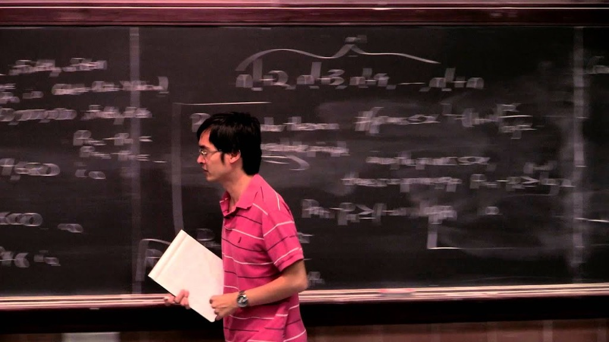

Bounded Gaps Between Primes
write down the primes:
$$2, 3, 5, 7, 11, 13, 17, 19, 23, 29, 31, \ldots$$now compute the gaps between consecutive primes:
$$1, 2, 2, 4, 2, 4, 2, 4, 6, 2, \ldots$$the gaps are irregular. this leads to two questions: can the gaps grow arbitrarily large? and do small gaps occur infinitely often? the first question has a clean answer dating to the 19th century. the second resisted serious progress for over two thousand years.
**unbounded gaps**
for any $n$, consider the block:
$$(n+1)! + 2,\quad (n+1)! + 3,\quad \ldots,\quad (n+1)! + (n+1)$$each term $(n+1)! + k$ is divisible by $k$ for $2 \leq k \leq n+1$, so each is composite. this produces $n$ consecutive non-primes. since $n$ is arbitrary, the gaps are unbounded. there are stretches of the number line, as long as one wishes, containing no primes at all.
**how primes thin out: the prime number theorem**
the prime number theorem, proved independently by hadamard and de la vallée poussin in 1896, states that the number of primes up to $x$ is approximately $x / \log x$. a consequence is that primes near a large number $x$ are spaced roughly $\log x$ apart on average. this is what $1/\log x$ means as a density: if you pick a large number $x$ at random, the probability that it is prime is about $1/\log x$. at $x = 10^6$ the average gap is about 14. at $x = 10^{12}$ it is about 28. primes become rarer, but only logarithmically slowly.
the deeper story behind the prime number theorem involves the riemann hypothesis. in 1859, bernhard riemann showed that the distribution of primes is controlled by the zeros of the riemann zeta function $\zeta(s)$, defined for complex $s$ by:
$$\zeta(s) = \sum_{n=1}^{\infty} \frac{1}{n^s} = \prod_{p \text{ prime}} \frac{1}{1 - p^{-s}}$$the second equality, the euler product, is the deep connection: every prime contributes a factor. the zeros of $\zeta(s)$ in the critical strip $0 < \text{Re}(s) < 1$ encode the irregularities in prime distribution. riemann conjectured that all such zeros lie on the line $\text{Re}(s) = 1/2$. this remains unproved and is arguably the most important open problem in mathematics. what is known is that the prime number theorem is equivalent to the fact that $\zeta(s)$ has no zeros on the line $\text{Re}(s) = 1$, which hadamard and de la vallée poussin established independently. if the riemann hypothesis were proved, it would give a much sharper error term in the prime number theorem, telling us not just the average spacing of primes but how much the actual distribution can deviate from it.
**the twin prime conjecture**
the question of small gaps is ancient. euclid proved around 300 bc that there are infinitely many primes. the twin prime conjecture, which asks whether infinitely many pairs of primes differ by exactly 2, is harder to pin down historically but appears in various forms throughout the 19th century. the pairs $(3,5), (5,7), (11,13), (17,19), (29,31), (41,43)$ keep appearing no matter how far you look, but no one has proved they never stop.
polignac's conjecture from 1849 is even bolder: for every even number $k$, there are infinitely many pairs of primes differing by exactly $k$. twin primes are the $k=2$ case. this too remains unproved for every value of $k$.
the average gap near $x$ is $\log x$, which grows. the twin prime conjecture says the minimum gap is 2 infinitely often. these two facts are not in contradiction. the average can grow while the minimum stays bounded, just as the average income in a country can rise while some people remain at the minimum wage. the question is whether the minimum is ever permanently left behind.
**sieve theory: how you count primes by elimination**
the main tool for attacking these questions is sieve theory. the basic idea is ancient: the sieve of eratosthenes finds all primes up to $n$ by starting with all integers and crossing out multiples of 2, then multiples of 3, then multiples of 5, and so on. what remains are the primes.
modern sieves are more sophisticated and more flexible. instead of finding primes exactly, they count them approximately, and instead of sieving a single sequence they can sieve tuples. the key question for twin primes is: how often do both $p$ and $p+2$ survive the sieve simultaneously?
the brun sieve, developed in 1915, was the first to make progress. viggo brun showed that the sum of reciprocals of twin primes converges:
$$\sum_{p,\, p+2 \text{ both prime}} \left(\frac{1}{p} + \frac{1}{p+2}\right) < \infty$$this is brun's constant, approximately 1.902. by contrast, the sum of reciprocals of all primes diverges (this is a theorem of euler). brun's result means that even if there are infinitely many twin primes, they are sparse enough that their reciprocals sum to a finite value. it was also the first hard theorem about twin primes, and it established sieve theory as a serious tool.
the goldston-pintz-yildirim (GPY) sieve, developed in the early 2000s, went further. it showed that:
$$\liminf_{n \to \infty} \frac{p_{n+1} - p_n}{\log p_n} = 0$$meaning that prime gaps, measured relative to their average size, become arbitrarily small infinitely often. this was a significant step: primes do cluster more tightly than average, infinitely often. but it did not establish a finite absolute bound on the gaps.
**zhang: the result and the man**
in april 2013, yitang zhang submitted a paper to the annals of mathematics with the title "bounded gaps between primes." it was accepted within three weeks.
zhang's result: there exists a finite constant $B$ such that
$$\liminf_{n \to \infty} (p_{n+1} - p_n) \leq B$$his value was $B = 70{,}000{,}000$. the point is not the size of the number. the point is that it is finite. no matter how far out on the number line you travel, you will always find two primes within 70 million of each other.
what the mathematical community found almost as remarkable as the result was who had proved it. zhang was 57 years old, a lecturer at the university of new hampshire with no permanent research position. he had received his phd from purdue in 1991 but struggled to find academic work afterward. for a period in the 1990s he worked at a subway restaurant. he eventually found a lectureship, teaching calculus year after year while continuing to think about number theory on his own. he had published almost nothing for over a decade. he was, by the conventional measures of academic mathematics, invisible.
he had been working on the bounded gaps problem quietly for years. he did not announce progress, did not circulate preprints, did not collaborate. he submitted a complete and essentially correct proof, and the annals accepted it. it is one of the more striking examples in recent mathematical history of a result arriving from a completely unexpected direction.
**the proof: how zhang used the GPY sieve**
zhang built on the GPY sieve but introduced a crucial new ingredient. the GPY approach required information about primes in arithmetic progressions: how evenly are primes distributed across the residue classes $a, a+q, a+2q, \ldots$ for various moduli $q$? the equidistribution of primes in progressions is governed by the bombieri-vinogradov theorem, which establishes that the distribution is uniform on average for $q$ up to $\sqrt{x}$.
GPY needed this to hold for $q$ slightly larger than $\sqrt{x}$, which is an unproved strengthening called the elliott-halberstam conjecture. zhang's insight was that he did not need the full elliott-halberstam conjecture. he needed only a weaker, more restricted version, applying to smooth moduli (those with no large prime factors). this restricted version he could actually prove, using deep results about exponential sums. it was enough to force infinitely many bounded gaps.

**maynard, polymath, and the reduction to 246**
shortly after zhang's paper appeared, james maynard, then a postdoctoral researcher, independently developed a new multidimensional sieve that gave a much simpler proof and dramatically reduced the bound. where zhang's argument controlled one pair of primes at a time, maynard's sieve tracked many primes simultaneously, showing that among any $k$ consecutive integers in a suitable admissible pattern, at least two must be prime infinitely often. this gave $B = 600$ almost immediately, and with further work, $B = 12$. the argument was cleaner, more flexible, and opened new directions.
at around the same time, terence tao proposed running polymath8, an open online research collaboration hosted on his blog. the premise was simple: reduce the bound as far as possible, publicly, with anyone who wanted to contribute. mathematicians from around the world, from professors to graduate students, posted observations, calculations, and improvements in the comment threads. the project ran in two phases. polymath8a optimised zhang's original argument and reduced the bound to 4,680. polymath8b incorporated maynard's ideas and eventually reduced it to 246.
the polymath project is worth pausing on as a model. mathematics is traditionally a solitary pursuit or at most a small collaboration. polymath8 produced a significant mathematical result through a process more like open-source software development than traditional research. the final paper listed the author as "d.h.j. polymath," a collective pseudonym. whether this model scales to harder problems is still an open question, but the project demonstrated that mathematical progress can be genuinely collaborative at scale, at least for the right kind of problem.
**where 246 leaves us**
the current best unconditional result is that infinitely many pairs of primes differ by at most 246. under the elliott-halberstam conjecture, maynard's method gives $B = 6$, meaning infinitely many pairs of primes differing by at most 6. under a stronger form of the conjecture, it gives $B = 2$, which would be the twin prime conjecture itself.
so the situation is: the twin prime conjecture is known to follow from a conjecture about prime distribution which itself seems very likely to be true but has not been proved. the gap between 246 and 2 is not merely numerical. it represents a genuine structural barrier in our understanding of how primes are distributed in arithmetic progressions.
the prime number theorem describes the thinning traffic. zhang, maynard, and the polymath project showed that the congestion never entirely disappears. the twin prime conjecture says the congestion always includes cars exactly two apart. that last step remains, for now, out of reach.